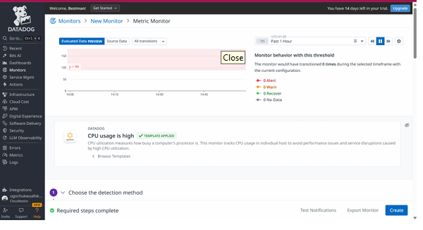

Monitoring & Observability
VM Monitoring and Alerting with Datadog
A virtual machine monitoring project focused on collecting system metrics, visualizing resource utilization, and detecting performance conditions through threshold-based alerts.
Project focus
Infrastructure monitoring
System health and resource visibility.
Monitoring platform
Datadog
Agent-based metric collection and dashboards.
Key capability
Threshold-based alerting
Detecting configured conditions and notifying responders.
Project overview
The goal was to monitor a virtual machine and make important system metrics visible through Datadog. The Datadog Agent collects supported host metrics and sends them to the monitoring platform for analysis and visualization.
The monitoring setup focused on CPU utilization, network traffic, and process-related metrics. Threshold-based monitors can help identify conditions that require investigation before they develop into more serious service issues.
The project also explored notification workflows and the importance of testing both alert triggering and recovery behavior.
Architecture
This conceptual diagram illustrates how host metrics can flow from a virtual machine through the Datadog Agent to the Datadog platform. Notifications depend on the integrations configured in the actual environment.
Source
Virtual Machine
CPU · Network · Processes
Collection
Datadog Agent
Collects host metrics
Monitoring
Datadog Platform
Dashboards · Monitors · Alert evaluation
Alert notifications, if configured
Slack
Channel notifications, if configured
Implementation
Install and configure the Datadog Agent
Set up the agent on the monitored virtual machine and verify that the host reports data to Datadog. Confirm agent installation and host connectivity before building monitors.
Build a metrics dashboard
Organize relevant host metrics into a dashboard to make system utilization easier to inspect.
-
system.cpu.user— user CPU utilization -
system.net.bytes_sent— network bytes sent -
system.net.bytes_rcvd— network bytes received -
process.stat.count— process count, where supported
Configure threshold-based monitors
Define warning and critical thresholds appropriate for the monitored system. For example, a CPU utilization monitor might use warning and critical thresholds of 60% and 80%, respectively, if those were the values used in the actual test.
Configure notifications
Connect the required notification destinations and verify that alert messages reach the intended recipients. Document only integrations that were successfully configured and tested.
Screenshots and evidence
The following images provide visual evidence for the monitoring project. Each image path corresponds to a file in the portfolio's images folder.

Host metrics dashboard
Dashboard evidence for visualizing host metrics and resource utilization.

Monitor configuration or alert
Visual evidence associated with monitoring thresholds or alert evaluation.

Virtual machine monitoring setup
Additional visual evidence related to the VM monitoring environment.
Testing and validation
The monitoring workflow can be validated by generating a controlled increase in CPU usage, observing the metrics, checking whether the configured monitor changes state, and verifying notification and recovery behavior.
Example Linux CPU stress test
stress --cpu 4 --timeout 120Run this only on a machine you control and only if the stress utility is installed. It creates CPU load for approximately two minutes, but does not guarantee that an alert will trigger.
Report a test as successful only if you observed the expected metrics, alert state, and notification. If a step was not tested, describe it as a proposed validation rather than a completed result.
Challenges and lessons learned
Challenges to consider
- Verifying that the agent reports the expected metrics.
- Selecting useful thresholds without generating excessive noise.
- Confirming notification delivery and alert recovery.
Key learning areas
- Host-level observability and metric visualization.
- Threshold-based monitoring and incident detection.
- Validating alert behavior instead of relying on configuration alone.